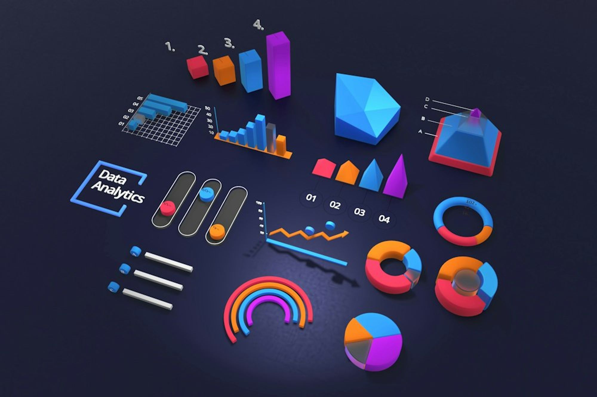
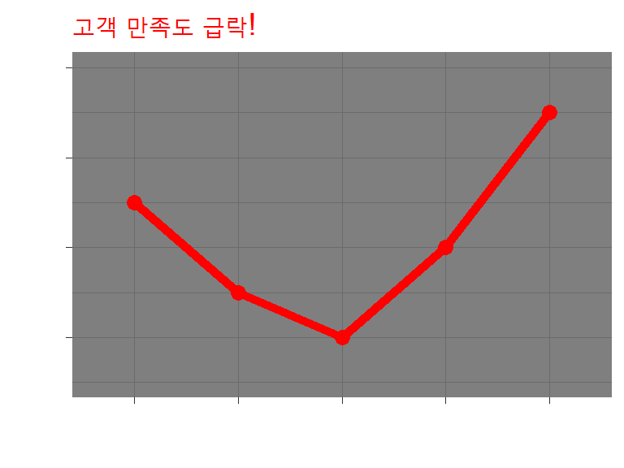
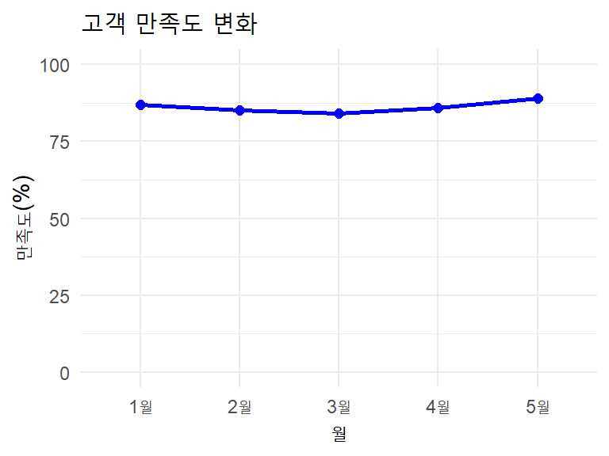

AI 문해력: 인공지능의 원리와 한계를 이해하고, AI가 생성한 정보를 비판적으로 해석·활용하는 능력
금융 문해력: 금융 정보를 이해하고 의사결정하는 능력
의사소통 문해력의 중요성
공대생/엔지니어들의 이메일 작성 실례 🤦♂️
❌ 이상한 이메일 예시
제목: 이슈
안녕하세요.
DB 커넥션 풀 사이즈 부족으로
타임아웃 발생.
HikariCP maxPoolSize 20→50 조정 필요.
SQL 쿼리 최적화도 병행.
확인바랍니다.
끝.
✅ 개선된 이메일 예시
제목: [긴급] 웹서비스 응답 지연 해결 방안 검토 요청
안녕하세요, 홍길동 대리님.
현재 사용자들이 웹서비스 접속 시
5초 이상 지연되는 문제가 발생하고 있습니다.
원인: 데이터베이스 연결 부족
해결방안: 연결 풀 크기 확대 (20→50개)
추가작업: 데이터베이스 쿼리 성능 개선
내일까지 검토 후 회신 부탁드립니다.
감사합니다.
의사소통 문해력의 중요성 (계속)
보고서 작성의 문제점들
전문용어 남용: 상대방이 모를 수 있는 기술용어 무분별 사용
과도한 축약: 맥락 없는 간결함으로 오해 유발
감정 표현 부족: 기계적이고 딱딱한 문체
논리 구조 부재: 결론 먼저, 이유는 나중에
독자 고려 부족: 내가 아는 것 = 상대방도 안다는 착각
왜 이런 일이 일어날까?
기술 중심 사고: 효율성과 정확성에만 집중
동질 집단 효과: 비슷한 사람들과만 소통
의사소통 교육 부족: 기술 교육 > 소프트 스킬
데이터 문해력이란?
데이터를 읽고, 이해하고, 분석하고, 시각화하여 의미 있는 정보를 도출하는 능력
데이터를 바탕으로 합리적인 의사결정을 내릴 수 있는 능력
데이터의 한계와 편향을 인식하고 비판적으로 사고하는 능력

데이터 리터러시 교육
현대 사회에서 데이터의 중요성
데이터 폭발 시대
매일 2.5퀸틸리언 바이트의 데이터 생성
2020년 이후 전 세계 데이터의 90%가 생성됨
IoT, 소셜미디어, 모바일 기기 등의 확산
비즈니스 환경의 변화
데이터 기반 의사결정이 표준화
경쟁력의 핵심 요소로 부상
모든 직무에서 데이터 활용 능력 요구
데이터 분석 대시보드
왜 데이터 문해력이 중요한가?
1. 더 나은 의사결정
객관적 근거 기반의 판단
리스크 최소화와 성공 확률 증대
편향과 직관의 오류 방지
2. 업무 효율성 증대
자동화를 통한 반복 작업 감소
패턴 인식으로 문제 해결 속도 향상
예측 분석으로 선제적 대응
3. 새로운 기회 창출
숨겨진 인사이트 발견
시장 트렌드 조기 포착
혁신적 아이디어 도출
데이터 기반 의사결정
데이터 문해력의 핵심 요소
1. 비판적 사고
데이터의 출처와 수집 방법 검증
편향과 오류 가능성 인식
상관관계 vs 인과관계 구분
맥락적 해석의 중요성
2. 통계적 지식
기술통계: 평균, 중앙값, 표준편차
추론통계: 가설검정, 신뢰구간
확률과 분포 이해
표본과 모집단의 관계
데이터 문해력 핵심 이미지
데이터 문해력의 핵심 요소 (계속)
3. 데이터 시각화
적절한 차트 선택: 막대그래프, 선그래프, 산점도 등
색상과 디자인 원칙
스토리텔링과 내러티브 구성
오해를 불러일으키는 시각화 피하기
4. 도구 활용 능력
Excel/Google Sheets: 기본 분석 도구
SQL: 데이터베이스 쿼리
Python/R: 고급 분석 및 모델링
Tableau/Power BI: 시각화 도구
데이터 문해력 발전 단계
초급 단계
기본 통계 이해
간단한 차트 해석
Excel 활용
데이터 정리
중급 단계
고급 통계 분석
복합 시각화
SQL 활용
패턴 인식
고급 단계
예측 모델링
머신러닝 활용
자동화 구현
전략적 인사이트
실무에서의 데이터 문해력 활용
설문조사업체의 핵심 업무
설문 설계 및 샘플링 전략 수립
응답률 최적화 및 품질 관리
대표성 확보 및 편향 제거
결과 해석 및 보고서 작성
데이터 신뢰성 검증
마케팅 분야
고객 세분화 및 타겟팅
캠페인 성과 분석
ROI 측정 및 최적화
시장 트렌드 분석
운영 분야
프로세스 최적화
품질 관리
재고 관리
비용 절감 분석
인사 분야
직원 만족도 조사
성과 평가 분석
이직률 예측
채용 효율성 분석
설문조사업체가 알아야 할 데이터 함정들
1. 샘플링 편향의 위험성
자기선택 편향: 응답하는 사람들의 특성이 치우침
접근성 편향: 전화조사 시 특정 연령층 제외
시간대 편향: 낮 시간 조사 시 직장인 누락
지역별 편향: 특정 지역의 과대/과소 표집
2. 질문 설계의 함정
유도 질문: “만족스러우신가요?” vs “어떻게 생각하세요?”
척도 설계: 중립 선택지 유무의 영향
순서 효과: 보기 순서가 응답에 미치는 영향
용어의 애매함: “자주”의 기준이 사람마다 다름
실제 사례: 잘못된 여론조사 분석
사례 1: 2016년 미국 대선 여론조사 실패
배경: 역사상 가장 큰 여론조사 실패 중 하나
예측 vs 실제 결과
대부분의 여론조사: 힐러리 클린턴 승리 예측 (확률 70-99%)
CNN 출구조사: 클린턴 45%, 트럼프 42% (선거 당일 오후 8시)
실제 결과: 도널드 트럼프 승리 (선거인단 304 vs 227)
전국 득표율: 클린턴 48.2%, 트럼프 46.1% (클린턴 290만표 앞서지만 패배)
주요 경합주 예측 오차
주
여론조사 평균
실제 결과
오차
위스콘신
클린턴 +7%
트럼프 +0.7%
7.7%p
펜실베이니아
클린턴 +5%
트럼프 +0.7%
5.7%p
미시간
클린턴 +4%
트럼프 +0.3%
4.3%p
파장
주요 언론과 여론조사 기관 신뢰도 급락
“여론조사는 죽었다”는 극단적 반응 등장
전 세계 여론조사업계에 큰 충격과 성찰
문제점
표본 구성: 고학력층 과대표집
조사 방식: 전화조사 응답률 저하
가중치: 과거 투표 패턴 기반 가정 오류
조사 시점: 선거 직전 여론 변화 미반영
교훈
다양한 조사 방법 병행 필요
표본 대표성 지속적 검증
불확실성 범위 명확한 소통
실시간 보정 메커니즘 구축
핵심 메시지
완벽한 조사는 없다. 한계를 인정하고 투명하게 소통하는 것이 핵심
실습: 2016년 미국 대선 사례 분석하기
여러분이라면 어떻게 개선했을까요?
문제 상황 재검토
전화조사 응답률: 9% (2016년 기준)
대졸 이상 응답자 비율: 실제 28% → 조사 43%
트럼프 지지층의 “shy voter” 현상
선거 2주 전 FBI 수사재개 발표 영향
개선 방안
다중 접촉법: 전화+온라인+SMS 병행
가중치 재조정: 교육수준별 세밀한 보정
모델링 개선: 2012년→2016년 변화 추세 반영
실시간 추적: 선거 당일까지 지속 조사
실제 적용한 개선책들
2020년 대선: 온라인 조사 비중 대폭 확대 (30% → 70%)
교육 가중치: 대졸/비대졸 비율을 센서스 데이터와 정확히 일치
리스크 커뮤니케이션: “확률적 예측”으로 표현 방식 변경
설문조사 데이터 품질 체크리스트
수집 단계 체크포인트
샘플 품질
목표 표본 크기 달성률: ___%
인구통계학적 대표성 확보
응답률: ___% (최소 30% 권장)
평균 응답 시간: ___분
응답 품질
중도포기율: ___%
너무 빠른 응답 (< 30초): ___개
동일 패턴 응답: ___개
“모름/무응답” 비율: ___%
분석 단계 체크포인트
이상치 검토: 극단값의 타당성 확인
가중치 적용: 모집단 특성 반영
신뢰구간 계산: 오차범위 명시
교차검증: 다른 자료원과 일관성 확인
실습: 품질 체크리스트 적용하기
사례: B2B 기업 만족도 조사
조사 개요: IT 서비스 기업 대상, 목표 500명, 온라인 조사
실제 결과
응답 완료: 247명 (49.4%)
중도 포기: 89명 (18%)
평균 응답시간: 2분 15초
모든 질문 동일응답: 23명 (9.3%)
20대 응답자: 8% (목표 25%)
품질 진단
응답률 부족: 50% 미달
응답시간 의심: 너무 짧음
연령편향: 젊은층 부족
불성실응답: 9.3%는 높음
실제 개선 액션
추가 모집: 20대 대상 별도 인센티브 제공
데이터 클리닝: 23명 불성실 응답 제외
가중치 적용: 연령×규모별 보정
신뢰구간 조정: 실제 n=224명 기준으로 재계산 (±6.5%p)
잘못된 차트가 만드는 오해들
사례 1: Y축 조작으로 인한 왜곡
❌ 문제 있는 차트

✅ 올바른 차트

핵심 교훈
Y축은 0부터 시작하는 것이 원칙
상대적 변화량보다 절대적 수치가 중요
제목과 라벨이 해석에 큰 영향을 미침
실습: 차트 문제점 찾기
여러분의 회사에서 받은 보고서를 분석해보세요
Case Study: 월별 응답률 보고서
문제점 찾기 연습
Y축 범위: 22-26%로 제한
제목 과장: “급락”이라고 표현
변화량 실제: 최고 2.3%p 차이
맥락 누락: 작년 동기 대비는?
올바른 해석
실제 변화량: 1.7%p 상승 (23.4% → 25.1%)
월별 변동폭: 표준편차 0.8%p (안정적)
25% 수준은 업계 평균 대비 양호
개선된 보고 방식
제목: “월별 응답률 현황 (23-25% 안정적 유지)” Y축: 0-30% 또는 20-30% + 구간 표시 추가 정보: 업계 평균선, 목표선, 신뢰구간 표시
언론이 만드는 데이터 왜곡 사례들
사례 1: 선택적 통계 인용
기사 제목: “청년 실업률 사상 최고!”
사실:
전체 실업률: 3.2% (전월 대비 -0.1%p)
청년 실업률: 7.8% (전월 대비 +0.1%p)
계절조정 실업률: 3.1% (변화 없음)
문제점:
체리피킹: 가장 충격적인 지표만 선택
맥락 누락: 계절적 요인 무시
비교 기준: 다른 연령층과의 비교 생략
시점 선택: 특정 월만 강조
사례 2: 그래프 조작을 통한 시각적 왜곡
자주 보는 문제들:
Y축 범위 조작으로 변화량 과장
색상 선택으로 특정 데이터 강조
파이차트 남용 (5개 이상 항목)
3D 효과로 정확한 비교 방해
실습: 언론 보도 분석하기
실제 기사를 분석해보세요
뉴스 제목: “청년 취업자 10만명 급감!”
기사 내용 요약:
청년 취업자: 전월 대비 10.2만명 감소
“코로나 이후 최대폭 하락”
“청년 고용절벽 심화”
추가 데이터 (기사에서 누락):
3월→4월: 계절적 요인 (졸업철 효과)
전년 동월 대비: -2.1만명 (개선)
청년 실업률: 7.2% → 7.1% (소폭 개선)
비판적 분석 연습
계절성 확인: 4월은 매년 감소
장기 트렌드: 전년 대비는 어떤가?
다른 지표: 실업률, 경활참가율은?
절대치 vs 상대치: 10만명이 얼마나 큰가?
올바른 해석
청년 취업자: 376만명 → 366만명
감소율: 2.7% (경미한 수준)
계절조정 시: 실질적 변화 거의 없음
설문조사업체의 역할
맥락 정보 제공: 계절성, 트렌드 설명
다각도 분석: 여러 지표를 종합적으로 제시
불확실성 소통: 일시적 변화 vs 구조적 변화 구분
설문조사 보고서 작성 모범 사례
필수 포함 사항
방법론 섹션
표본 설계: 모집단, 표본 크기, 추출 방법
조사 기간: YYYY년 MM월 DD일 ~ DD일
조사 방법: 전화/온라인/대면
응답률: N% (목표 대비 달성률)
가중치: 성별/연령/지역별 보정
결과 해석
신뢰구간: 95% 신뢰수준, ±N%p
유의성 검정: p-value < 0.05
제한점: 인과관계 vs 상관관계 구분
시계열 비교: 과거 데이터와의 일관성
보고서 품질 체크리스트
모든 차트에 데이터 출처 명시
퍼센트와 실수(n) 병기
통계적 유의성 표시
해석상 주의사항 명시
실습: 보고서 개선하기
Before & After 비교
❌ 개선 전 보고서 예시
고객 만족도 조사 결과
조사기간: 1월
응답자: 500명
만족도: 3.2점/5점
불만족 이유: 배송지연 30%
주요 문제점:
방법론 정보 부족
신뢰구간 없음
비교 기준 없음
해석 한계 미명시
✅ 개선 후 보고서 예시
2024년 1분기 고객 만족도 조사
- 조사기간: 2024.01.15~01.25 (11일간)
- 모집단: 최근 3개월 구매고객 12,847명
- 표본크기: 523명 (응답률 41.8%)
- 신뢰수준: 95%, 오차범위: ±4.3%p
- 가중치: 성별/연령/지역별 보정 적용
방지 방법 - 가설 설정 전 탐색적 분석 수행 - 반박 가능한 가설 설정 - 동료 검토 및 외부 관점 수용
데이터 편향
생존자 편향 (Survivorship Bias)
정의: 성공한 사례만 관찰하고 실패한 사례는 누락
성공 사례 과대평가
실패 사례 과소평가
잘못된 성공 패턴 도출
실제 사례
창업 성공담: 실패한 창업가는 조명받지 않음
투자 수익률: 망한 펀드는 기록에서 제외
대학 진학률: 중도 탈락자 제외한 통계
편향 방지 체크리스트
✅ 표본 설계 시 대표성 확보
✅ 다양한 관점에서 데이터 해석
✅ 실패 사례도 포함한 전체적 분석
✅ 외부 검토 및 동료 평가 실시
2단계: 상관관계 vs 인과관계
상관관계 (Correlation)
정의: 두 변수 간의 선형적 관계 정도
양의 상관관계: 한 변수 ↑ → 다른 변수 ↑
음의 상관관계: 한 변수 ↑ → 다른 변수 ↓
무상관: 두 변수 간 선형적 관계 없음
인과관계 (Causation)
정의: 한 변수가 다른 변수의 원인이 되는 관계
시간적 순서: 원인이 결과보다 먼저 발생
메커니즘: 논리적인 작용 원리 존재
통제: 다른 변수 통제 시에도 관계 유지
혼동 변수 (Confounding Variable)
정의: 원인과 결과 모두에 영향을 미치는 제3의 변수
허위 상관관계 생성
진짜 관계 왜곡
복잡한 인과 구조 형성
실제 사례들
아이스크림 판매량 ↔︎ 익사 사고
상관관계: 높음 (r = 0.8)
인과관계: 없음
혼동변수: 기온 (더운 날 → 아이스크림 ↑, 수영 ↑)
교육비 지출 ↔︎ 학업 성취도
상관관계: 양의 관계
혼동변수: 가정의 사회경제적 지위
인과관계
인과관계 검증 방법
1. 실험 연구 (Experimental Study) - 무작위 할당 - 통제 조건 설정 - 변수 조작
2. 준실험 연구 - 자연 실험 활용 - 성향 점수 매칭 - 회귀 불연속 설계
3. 관찰 연구에서의 추론 - Hill의 9가지 기준 - 다양한 연구 방법 통합 - 메타 분석 활용
실무 적용 팁
⚠️ “상관관계는 인과관계를 의미하지 않는다”
성급한 인과 추론 금지
대안 설명 가능성 검토
전문가 의견 수렴
추가 데이터로 검증
3단계: 과도한 일반화 주의
통계적 유의성의 함정
p-hacking 문제
다중 검정: 여러 가설을 동시 검정
데이터 마이닝: 유의한 결과가 나올 때까지 분석
선택적 보고: 유의한 결과만 발표
실용적 유의성 vs 통계적 유의성
효과 크기: 실질적 차이의 크기
표본 크기: 큰 표본에서는 작은 차이도 유의
비용-편익 분석: 실무적 가치 고려
일반화 가능성 (Generalizability)
내적 타당도 vs 외적 타당도
내적 타당도: 연구 결과의 정확성
외적 타당도: 다른 상황에서의 적용 가능성
일반화 제약 요인
지역적 특수성: 문화, 제도, 환경 차이
시간적 한계: 시대적 맥락과 트렌드 변화
인구 집단 차이: 연령, 성별, 직업 등
산업/도메인 특성: 업계별 고유한 특성
맥락의 중요성 (Context Matters)
동일한 데이터, 다른 해석
경제 지표: 선진국 vs 개발도상국
건강 데이터: 연령층별, 지역별 차이
소비 패턴: 계절성, 문화적 배경 고려
과도한 일반화
올바른 일반화를 위한 체크리스트
연구 설계 단계
✅ 대상 모집단 명확히 정의
✅ 표본 대표성 확보
✅ 충분한 표본 크기 확보
✅ 다양한 하위 집단 포함
분석 단계
✅ 효과 크기와 신뢰구간 보고
✅ 하위 집단별 분석 실시
✅ 민감도 분석 수행
✅ 대안 모델 검토
해석 단계
✅ 연구의 한계 명시
✅ 적용 가능 범위 제한
✅ 추가 연구 필요성 제시
✅ 실무적 함의 구분
실무 적용 가이드라인
점진적 적용: 작은 범위에서 테스트
지속적 모니터링: 적용 결과 추적
맥락 조정: 환경 변화에 따른 수정
전문가 자문: 도메인 지식 활용
4단계: 데이터 윤리와 책임감
개인정보 보호 (Privacy Protection)
GDPR 및 개인정보보호법 준수
개인식별정보: 직접 식별자 제거/암호화
동의와 투명성: 명시적 동의 획득
잊힐 권리: 개인 데이터 삭제 권리
데이터 최소화: 필요한 데이터만 수집
익명화와 가명화
익명화: 재식별 불가능하게 처리
가명화: 추가 정보 없이는 식별 불가
연결성 제거: 여러 데이터 간 연결 차단
알고리즘 공정성 (Algorithmic Fairness)
편향 방지와 공정성 확보
집단 공정성: 그룹별 동등한 결과
개별 공정성: 유사한 개인에게 유사한 대우
설명 가능한 AI: 의사결정 과정의 투명성
차별 방지
보호 속성: 성별, 나이, 인종 등 차별 금지
간접 차별: 우회적 차별 요소 탐지
영향 평가: 집단별 영향 분석
데이터 사용 윤리 (Data Ethics)
윤리적 데이터 수집과 사용
신뢰와 투명성: 데이터 사용 목적 공개
사회적 선: 공익을 위한 데이터 활용
피해 최소화: 의도치 않은 부작용 방지
데이터 윤리
윤리적 데이터 과학 원칙
1. 투명성 (Transparency) - 데이터 출처와 수집 방법 공개 - 분석 과정과 가정 명시 - 한계와 불확실성 솔직한 소통
2. 책임감 (Accountability) - 결과에 대한 책임 수용 - 오류 발견 시 즉시 수정 - 지속적인 품질 관리
3. 공정성 (Fairness) - 모든 이해관계자 고려 - 편향과 차별 방지 - 동등한 기회와 대우 보장
4. 무해성 (Do No Harm) - 의도치 않은 피해 방지 - 취약 계층 보호 - 장기적 영향 고려
실무 체크리스트
✅ IRB(기관생명윤리위원회) 승인 여부
✅ 개인정보 처리 방침 수립
✅ 데이터 보안 체계 구축
✅ 정기적인 윤리 교육 실시
✅ 윤리 위반 신고 체계 마련
조직에서의 데이터 문해력 문화
성공적인 데이터 문화 구축을 위한 핵심 영역
1단계: 리더십과 전략
경영진의 솔선수범과 데이터 기반 의사결정 모델링
명확한 비전과 전략 수립 및 전 조직 공유
성과 측정 지표 설정과 정기적 모니터링
2단계: 인프라와 접근성
데이터 접근성 향상을 위한 시스템 구축
통합 데이터 플랫폼 구축과 표준화
보안과 거버넌스 체계 확립
3단계: 교육과 역량 개발
체계적인 교육 프로그램 운영
실패를 통한 학습 장려와 심리적 안전감 조성
역량 인증 체계 도입과 경력 개발 지원
4단계: 소통과 협업
데이터 스토리텔링 역량 강화
비전문가와의 소통 능력 개발
데이터 기반 토론 문화 정착
리더십과 데이터 전략
경영진의 역할과 책임
데이터 리더십의 핵심 요소
비전 제시: 데이터 문화의 중요성과 목표를 명확히 전달
솔선수범: 리더가 먼저 데이터를 활용한 의사결정 시연
투자 결정: 데이터 인프라, 도구, 교육에 대한 적극적 투자
부서 간 협력: 사일로를 없애고 데이터 공유 문화 조성
전략적 접근 방법
로드맵 수립: 단계별 데이터 문화 구축 계획
명확한 KPI: 데이터 활용도, 의사결정 품질 측정 지표
정기 검토: 월간/분기별 데이터 문화 진단과 개선
성공 사례 공유: 데이터 활용 우수 사례 발굴과 확산
실무 적용 가이드
모든 중요 회의에서 데이터 기반 자료 필수 제출
의사결정 과정에서 “데이터가 이를 뒷받침하는가?” 질문 습관화
데이터 분석팀과 경영진 간 정기적 소통 채널 구축
실패에 대한 관용적 문화와 학습 중심 접근 방식 채택
데이터 인프라와 접근성
데이터 민주화를 위한 시스템 구축
데이터 접근성 향상 방안
셀프서비스 분석: 비전문가도 쉽게 사용할 수 있는 BI 도구 도입
통합 데이터 허브: 다양한 소스의 데이터를 한 곳에서 접근
데이터 카탈로그: 조직 내 모든 데이터 자산에 대한 메타데이터 관리
모바일 대시보드: 언제 어디서나 데이터에 접근 가능한 환경
기술적 인프라 요구사항
클라우드 기반 플랫폼: 확장성과 유연성을 제공하는 인프라
실시간 데이터 파이프라인: 최신 데이터의 신속한 반영
시각화 도구: Tableau, Power BI, Looker 등 직관적 도구
자동화된 리포팅: 정기 보고서의 자동 생성과 배포
데이터 거버넌스 체계
데이터 정책: 수집, 저장, 활용, 폐기에 대한 명확한 규칙
접근 권한 관리: 역할 기반 데이터 접근 통제 시스템
데이터 품질 관리: 정확성, 완전성, 일관성 보장 프로세스
변경 이력 관리: 데이터 수정 내역의 추적과 복원 기능
보안과 컴플라이언스
암호화: 저장 및 전송 데이터의 종단간 암호화
개인정보 보호: GDPR, 개인정보보호법 등 법적 요구사항 준수
감사 기능: 모든 데이터 접근과 사용 내역의 로깅
백업과 복구: 데이터 손실 방지와 신속한 복구 체계
교육과 역량 개발
조직 전체의 데이터 역량 강화
체계적인 교육 프로그램
역할별 맞춤 교육: 경영진, 분석가, 일반 직원별 차별화된 커리큘럼
단계별 학습 경로: 기초 → 중급 → 고급 과정의 체계적 구성
실습 중심 교육: 이론보다는 실제 업무에 적용 가능한 실무 중심
지속적 학습: 정기적 재교육과 최신 트렌드 반영
교육 내용 및 방법
기초 통계와 분석: 평균, 분산, 상관관계 등 기본 개념
도구 활용법: Excel, SQL, 시각화 도구 사용법
데이터 스토리텔링: 인사이트를 효과적으로 전달하는 방법
윤리와 개인정보: 책임감 있는 데이터 사용 원칙
학습 지원 체계
멘토링 프로그램: 숙련자와 초보자의 1:1 매칭
CoP(Community of Practice): 관심사별 학습 모임 운영
인증과 보상: 역량 달성에 대한 인정과 인센티브
학습 리소스: 온라인 강의, 서적, 외부 컨퍼런스 지원
실패 허용과 학습 문화
실험 장려: 작은 실험을 통한 시행착오 학습
심리적 안전감: 실수에 대한 처벌보다는 학습 기회로 활용
아이디어 공유: 실패 경험과 교훈의 조직 차원 공유
반복 개선: 실패를 바탕으로 한 지속적 프로세스 개선
소통과 협업 강화
효과적인 데이터 커뮤니케이션
데이터 스토리텔링 역량 개발
내러티브 구성: 도입-전개-결론의 논리적 스토리 구조
청중 맞춤형 소통: 대상에 따른 메시지와 표현 방식 조정
효과적 시각화: 데이터의 핵심 메시지를 강조하는 차트 디자인
프레젠테이션 스킬: 자신감 있고 설득력 있는 발표 능력
비전문가와의 소통 전략
쉬운 용어 사용: 전문 용어를 일반인이 이해할 수 있는 표현으로 변환
질문과 대화: 일방적 설명보다는 상호작용적 소통 방식
맥락 제공: 데이터가 실제 업무와 어떻게 연결되는지 설명
실용적 인사이트: 당장 적용 가능한 실행 방안 제시
데이터 기반 토론 문화 정착
객관적 근거 중심: 의견보다는 데이터에 기반한 논의
비판적 사고: 데이터의 한계와 가정에 대한 건설적 질의
협력적 분석: 여러 관점을 종합한 통합적 해석
의사결정 문서화: 근거와 결론을 명확히 기록
조직 내 데이터 문화 확산
성공 사례 공유: 데이터 활용으로 얻은 성과의 조직 내 확산
정기 워크숍: 부서별 데이터 활용 경험 공유 세션
포상과 인정: 뛰어난 데이터 활용 사례에 대한 공식 인정
크로스 펑셔널 협업: 부서 간 데이터 공유와 협업 프로젝트
미래의 데이터 문해력
급변하는 기술 환경에서의 새로운 역량
기술 발전이 가져올 변화
AI/ML의 일상화: 복잡한 분석도 클릭 몇 번으로 가능
자동화된 인사이트: 시스템이 스스로 패턴과 이상징후 탐지
실시간 의사결정: 스트리밍 데이터 기반의 즉시 대응
증강 분석: 인간의 직관과 AI의 연산력 결합
새로운 역량 요구사항
AI 도구 활용: AutoML, 자연어 쿼리 등 신기술 습득
윤리적 판단: AI 결과의 공정성과 편향 검토 능력
알고리즘 이해: 블랙박스가 아닌 해석 가능한 AI 활용
프라이버시 의식: 개인정보 보호와 데이터 주권 인식
새로운 기술과 트렌드
차세대 데이터 분석 기술
인공지능과 머신러닝의 대중화
AutoML (자동화된 기계학습): 전문 지식 없이도 ML 모델 구축 가능
자연어 처리: 일반 언어로 데이터에 질문하고 답변 받기
생성형 AI: GPT, Claude 등을 활용한 인사이트 생성과 해석
MLOps: 머신러닝 모델의 생산 환경 배포와 관리
자동화된 인사이트 도출
자동 이상 탐지: 시스템이 스스로 비정상 패턴 발견
예측 분석 자동화: 미래 트렌드를 자동으로 예측하고 알림
스마트 알림: 중요한 변화나 기회를 실시간 감지 후 알림
추천 시스템: 데이터 기반으로 최적의 액션 제안
실시간 데이터 분석
스트리밍 분석: 데이터 생성과 동시에 분석 결과 제공
실시간 대시보드: 비즈니스 상태를 실시간으로 모니터링
모바일 우선: 언제 어디서나 실시간 데이터 접근
연속적 학습: 새로운 데이터로 모델이 지속적 개선
증강 분석 (Augmented Analytics)
AI 지원 데이터 준비: 자동으로 데이터 정제와 변환
스마트 데이터 디스커버리: AI가 숨겨진 패턴과 관계 발견
자연어 인사이트: 분석 결과를 자연어로 자동 설명
휴먼-AI 협업: 인간의 직관과 AI의 연산력 최적 결합
변화하는 역량 요구사항
미래 데이터 문해력을 위해 갖춰야 할 핵심 역량
AI 도구 활용 능력
NoCode/LowCode 플랫폼: 코딩 없이 복잡한 분석 모델 구축
음성/자연어 인터페이스: 말로 데이터 분석 요청하고 결과 해석
AI 디자인 도구: 자동으로 최적화된 시각화와 리포트 생성
API 통합: 다양한 AI 서비스를 업무 플로우에 통합
윤리적 데이터 사용
알고리즘 공정성: 편향되지 않은 공정한 AI 모델 개발과 검증
투명성과 설명가능성: AI 의사결정 과정을 명확히 설명할 수 있는 능력
데이터 주체 권리: 개인의 데이터 권리 보장과 윤리적 활용
규제 준수: 변화하는 데이터 관련 법규에 대한 지속적 학습
개인정보 보호 인식
프라이버시 바이 디자인: 개인정보 보호를 처음부터 고려한 시스템 설계
데이터 최소화: 목적에 필요한 최소한의 데이터만 수집과 활용
잊힐 권리: 개인 데이터 삭제 요청에 대한 기술적 대응 능력
글로벌 규제: GDPR, CCPA 등 국제적 개인정보 보호 규정 이해
새로운 협업 패러다임
휴먼-AI 팀워크: AI를 팀원으로 활용하는 협업 방식
클라우드 네이티브: 클라우드 환경에서의 효율적 데이터 작업
크로스 펑셔널: 기술팀과 비즈니스팀 간의 원활한 소통
평생 학습: 급변하는 기술에 적응하는 지속적 학습 능력
비판적 사고와 판단력
AI 결과 검증: 자동화된 결과를 맹신하지 않고 비판적 검토
위험 평가: AI 도입과 활용에 따른 잠재적 위험 사전 평가
가치 판단: 기술적 가능성과 윤리적 타당성 간의 균형점 찾기
창의적 활용: 기존 틀을 벗어난 혁신적 데이터 활용 방안 모색
실습 예제: 고객 만족도 조사 분석
문제 상황
한 온라인 제품 판매 기업의 고객 만족도 조사에서 예상보다 낮은 점수가 나왔습니다. 신뢰할 수 있는 결과인지 검증하고 개선 방안을 제시해야 합니다.
조사 개요
기간: 2024년 1월 15일 ~ 2월 15일 (4주간)
방법: 온라인 설문 + 전화 인터뷰
목표 표본: 1,000명 (신뢰도 95%, 오차범위 ±3.1%p)
실제 응답: 847명 (응답률 84.7%)
주요 결과
항목
점수
전년 대비
전체 만족도
3.2/5.0
-0.4점
제품 품질
3.8/5.0
-0.1점
고객 서비스
2.9/5.0
-0.6점
가격 적정성
3.0/5.0
-0.3점
실습 풀이: 고객 만족도 조사 심화 분석
단계별 문제 해결 과정
1단계: 첫 인상과 의심하기
전년 대비 0.4점 하락: 단순한 성과 악화인가, 측정 문제인가?
의문점 제기: “왜 이런 결과가 나왔을까?”
근본 원인 탐색: 실제 서비스 문제 vs 조사 방법론 문제
2단계: 조사 설계 검토
목표 vs 실제: 1,000명 → 847명 (15.3% 부족)
조사 시기: 1-2월 (연말연시 배송 이슈 시기)
혼합 방법론: 온라인 + 전화의 장단점 분석
3단계: 숨겨진 패턴 발견
20대 부족 문제: 목표 18% → 실제 12% (33% 부족)
배송 불만 급증: 2023년 대비 배송 관련 불만 40% 증가
고객센터 이슈: 상담 대기시간 평균 8분 (전년 4분)
4단계: 가설 검증과 반박
가중치 보정: 20대 비중 조정 시 만족도 3.0점으로 추가 하락
상관관계 분석: 배송 만족도가 전체 만족도의 52% 설명
세그먼트 분석: 신규 고객 vs 기존 고객 만족도 차이 (2.8 vs 3.4)
실습 풀이: 데이터 해석 시 주의점
흔히 저지르는 해석 오류들
오류 1: 표본 편향 무시
잘못된 해석: “전체 고객 만족도가 3.2점이므로 보통 수준”
올바른 해석: “20대가 과소표집되어 실제 만족도는 더 낮을 가능성”
오류 2: 상관관계를 인과관계로 착각
잘못된 해석: “배송 서비스만 개선하면 전체 만족도 해결”
올바른 해석: “배송과 만족도가 연관성 높으나, 다른 요인도 고려 필요”
오류 3: 절대값만 보고 맥락 무시
잘못된 해석: “3.2점은 60% 수준으로 나쁘지 않음”
올바른 해석: “전년 대비 0.4점 하락은 고객 이탈 위험 신호”
오류 4: 통계적 유의성 과신
잘못된 해석: “p<0.05이므로 배송이 확실한 문제”
올바른 해석: “배송 이슈가 주요 요인이나, 실무적 개선 효과도 고려”
실무진에게 보고할 때 핵심 포인트
경영진 보고용 (1분 요약)
핵심: 젊은 고객층 만족도 심각, 배송 서비스 즉시 개선 필요
영향: 방치 시 20대 고객 이탈로 연 매출 15% 감소 예상
액션: 배송업체 교체 + 젊은층 타겟 재조사 실시
실무진 보고용 (5분 설명)
방법론 한계: 표본 편향으로 인한 결과 왜곡 가능성
근본 원인: 배송 지연 + 고객센터 응대 품질 저하
개선 로드맵: 단기(배송) + 중기(시스템) + 장기(문화) 방안
실습 예제: 데이터 품질 검증
1단계: 표본 대표성 확인
목표 vs 실제 표본 구성:
목표 실제 편차
성별 남성 48% 45% -3%
여성 52% 55% +3%
연령 20대 18% 12% -6% ⚠️
30대 22% 20% -2%
40대 25% 28% +3%
50대+ 35% 40% +5% ⚠️
지역 서울 19% 22% +3%
경기 21% 19% -2%
기타 60% 59% -1%
2단계: 응답 품질 점검
평균 응답시간: 4분 23초 (적정: 3-8분)
중도 포기율: 12.3% (양호: <15%)
스피더 응답: 23건 (전체의 2.7%, 제외 처리)
직선응답: 15건 (전체의 1.8%, 제외 처리)
실습 풀이: 데이터 품질 검증 심화
표본 대표성 문제 상세 분석
연령별 편향 심화 분석
20대 부족 (-6%p): 온라인 설문 참여율 저조
원인: 설문 피로도, 인센티브 부족, 접근 채널 한계
영향: 디지털 네이티브층의 의견 누락
50대+ 과다 (+5%p): 전화 조사 응답률 높음
원인: 상대적으로 많은 여가시간, 전화 친화적
영향: 보수적 성향 과대 반영 가능성
지역별 균형성 검토
서울 과다표집 (+3%p): 접근 용이성
지방 소외 위험: 교통, 물류 환경 차이 반영 부족
성별 편향은 미미하지만…
남성 -3%p, 여성 +3%p
쇼핑 패턴과 만족도 기준의 성별 차이 고려 필요
응답 품질 지표 해석
평균 응답시간 4분 23초 분석
양호한 수준 (적정 범위 3-8분)
너무 빠른 응답 (2분 미만): 23건 → 성의없는 응답 가능성
너무 긴 응답 (15분 초과): 34건 → 중단 후 재시작 등
스피더 응답과 직선응답 처리
스피더: 평균 시간의 1/3 미만 (23건, 2.7%)
직선응답: 모든 문항 동일 답변 (15건, 1.8%)
품질 관리: 총 38건(4.5%) 제외로 데이터 신뢰성 확보
실습 풀이: 통계적 검증과 의사결정
가중치 보정의 실제 효과
보정 전후 비교 분석
보정 전 보정 후 차이
전체 만족도 3.2 3.0 -0.2점
제품 품질 3.8 3.7 -0.1점
고객 서비스 2.9 2.7 -0.2점
가격 적정성 3.0 2.9 -0.1점